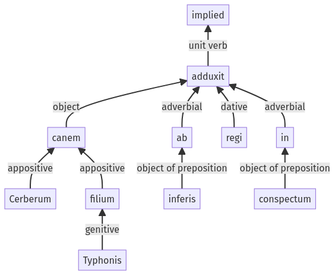

Hyginus, Fabulae, 30pr.13.1-30pr.13.10a
30pr.12.1-30pr.12.20a | 33pr.1.1-33pr.1.30a
Sentence 431
30pr.13.1-30pr.13.10a
canem Cerberum Typhonis filium ab inferis regi in conspectum adduxit.
1 canem Cerberum Typhonis filium ab inferis regi in conspectum adduxit
canem Cerberum Typhonis filium ab inferis regi in conspectum adduxit.
Highlighting:
- connecting words
- unit verb
- subject
- object
Color code:
- independent clause (level 1, transitive verb)
